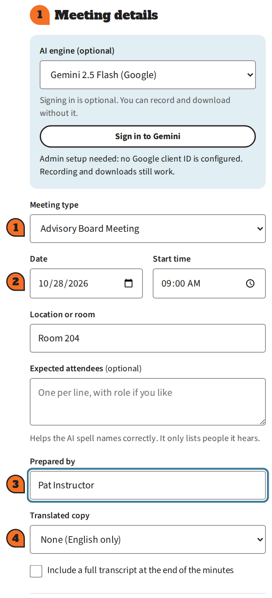
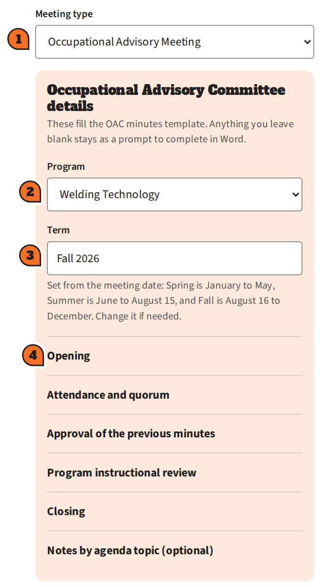
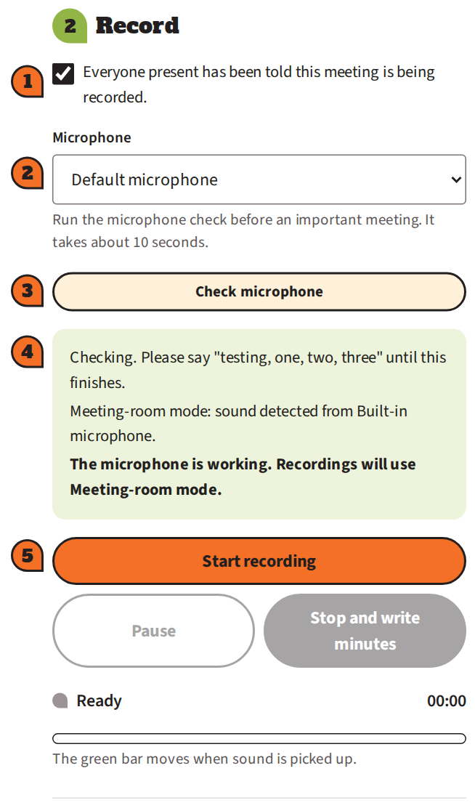
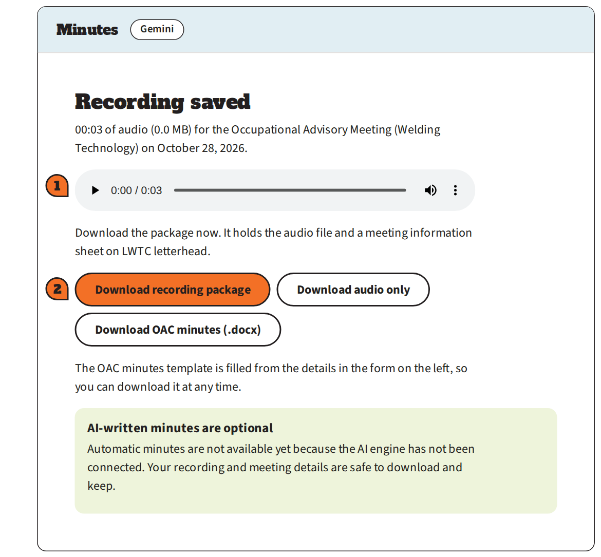
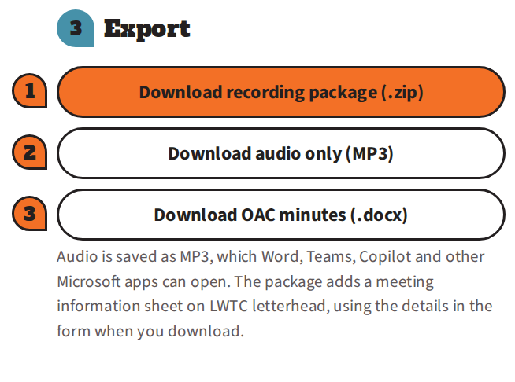

Meeting minutes help
Answers to common questions about recording a meeting and building the minutes at stafftools.lwtc.app.
No questions match that search. Try a shorter word, or download the PDF guide for the full walkthrough.
Getting started
What is the Meeting Minutes page?
It is a tool at stafftools.lwtc.app that records a meeting through your web browser. When you finish, you download one .zip file with the audio and a meeting information sheet on LWTC letterhead. For an Occupational Advisory meeting, the Word document also includes the OAC minutes, filled in from the details you entered, starting on page 2.
Do I need to sign in?
No. A staff sign-in page is coming. Until then, the site is open to anyone who has the link, so share it only with colleagues.
The page also shows an optional AI engine sign-in that can draft minutes from a recording. You do not need it, and it may not be connected yet. Recording and downloading work without it.
Which browser and device should I use?
Use Google Chrome on a laptop or desktop computer. Microsoft Edge uses the same technology and should work the same way. The page has not been tested in other browsers, and a phone or tablet is not recommended.
Do I need an internet connection?
Yes, to open the page and to download the package, because the page loads a few tools from the internet. The recording itself is made inside your browser on your computer.
What do I need for the whole process?
- A computer with Chrome and a microphone (built in, a headset, or a room microphone).
- About 10 minutes before the meeting to fill in the details and test the microphone.
- Microsoft Word with your LWTC Microsoft 365 account, to open the minutes and to add a transcript.
Meeting types and the OAC form
Which meeting type should I choose?
Pick the closest match from the Meeting type menu: Advisory Board Meeting, Faculty Senate, Department Review, Curriculum Committee, Occupational Advisory Meeting, Accreditation Planning, Professional Development, or Other. Every type gives you the audio and a meeting information sheet. Only Occupational Advisory Meeting also adds the OAC minutes to the meeting document.

My meeting is not on the list.
Choose Other. A box called Describe the meeting appears. Type a short name, such as "Welding program industry roundtable". The name is used in the Word documents and in the file names.
What does the Occupational Advisory form do?
When you choose Occupational Advisory Meeting, an orange box opens with the same questions as the OAC Meeting Minutes template. Choose the Program, check the Term, then open each section by clicking its name and fill in what you know. The page writes your answers into the OAC minutes, following the template's agenda and wording, including the program name everywhere the template says "Program." The minutes are added to your meeting document, starting on page 2.

Do I have to fill in every field?
No. Fill in what you know, during the meeting or afterward. Anything you leave blank stays in the Word document as a gray prompt, such as "Type minutes here" or "[choose method]," so you can type over it there. The page never guesses.
How is the term chosen?
It is set from the meeting date: Spring runs January to May, Summer runs June 1 to August 15, and Fall runs August 16 to December. You can change the Term box if it is wrong. The term also fills in the document title, the previous and next terms, and the academic year in the Program Status heading.
Why does "Quorum present" already say Yes?
It switches to Yes when you list three or more members present, since a quorum needs at least three members and one can be virtual. You can change it to No or clear it at any time.
Why is the "Called to order at" time already filled in?
It starts as your meeting start time. Change it to the time you actually called the meeting to order. The next-meeting box starts as the next term with "date TBD," and "Minutes submitted by" starts as the name in Prepared by.
My program is not in the list.
Tell your administrator. The program list is kept in the page, and a program can be added.
What is in the meeting document?
Page 1 is the meeting information sheet: the audio file, date, location, and who prepared it, on LWTC letterhead. For an Occupational Advisory meeting, the OAC minutes start on page 2 with the same letterhead, the agenda table, and your program, term, names, and notes filled in.
Can I get the OAC minutes without recording?
Yes. Once a program is chosen, click Download meeting document (.docx) in the Export section at any time, even before the meeting. The recording rows on page 1 then say that no recording has been made yet.
I found a mistake after downloading.
Fix it in the form and download again, or correct the text in Word. The documents use the form as it was at the moment you clicked download.
Recording and microphone
What does the "Everyone present has been told this meeting is being recorded" box mean?
Tell everyone present that the meeting is being recorded, then check the box. The page will not start recording until it is checked. Follow LWTC policy on recording meetings, and ask your administrator if you are unsure what applies to your meeting.
Chrome asked to use my microphone. What do I click?
Click Allow. If you see "Allow while visiting the site," choose that. The box appears the first time you check the microphone or start recording.
I clicked Block, or Chrome never asked.
- Click the icon at the left end of Chrome's address bar (a lock or a settings-sliders icon) and open Site settings.
- Set Microphone to Allow, then reload the page.
You can also go to Chrome Settings → Privacy and security → Site settings → Microphone.
If Chrome is allowed but there is still no sound, your computer may be blocking it. On Windows, open Settings → Privacy & security → Microphone and turn on microphone access and "Let desktop apps access your microphone." On a Mac, open System Settings → Privacy & Security → Microphone and turn on Google Chrome.
How do I know the microphone is working?
Click Check microphone and say "testing, one, two, three." A green box that says "The microphone is working" means you are ready. An orange box means no sound was heard and lists what to check. While recording, the green level bar moves when sound is picked up.

Which microphone should I choose?
"Default microphone" is usually right for a laptop or headset. In a conference room, choose the room microphone by name from the Microphone menu. Names appear once Chrome is allowed to use the microphone. Run Check microphone after choosing.
The level bar does not move, or I see "No sound is reaching the recorder."
- Click Check microphone. It also tries your other microphones and picks one that works.
- Choose a different microphone in the Microphone menu.
- Check your computer's microphone privacy settings (see the question about clicking Block).
- Close apps such as Teams or Zoom that may be using the microphone, and check for a mute switch on the device.
The page says "This recording looks silent."
No sound reached the microphone. Click Check microphone in the warning, fix the problem, and record again. A silent recording cannot be recovered.
Can I pause the recording?
Yes. Click Pause for a break and Resume to continue. Time while paused is not recorded.
Why is the stop button called "Stop and write minutes"?
It always stops and saves the recording. It only writes minutes if the optional AI engine is connected. Without the AI engine it simply saves the recording, which is what you want.

How long can I record?
An hour of audio is about 14 MB. The page is meant for normal meetings. For a very long session of several hours, stop and download partway, then start a new recording. Keep the computer plugged in and awake the whole time.
What if I close the tab or the computer goes to sleep?
The recording is lost. It exists only in your browser until you download it. Keep the tab open and the computer awake until you have downloaded the package. The page warns you if you try to leave before downloading.
Is my recording uploaded anywhere?
No. It stays in your browser until you download it, and nothing is sent to an LWTC server. If you use the optional AI engine, the audio is sent to that service to write minutes. When you later use Word's Transcribe, Word uploads the audio to your OneDrive (see the Word questions below).
The package and files
What is in the recording package?
- ..._recording.mp3: the audio of the meeting.
- ..._meeting-info.docx: the Word document. Page 1 is the meeting information sheet on LWTC letterhead. For Occupational Advisory meetings, the OAC minutes follow on page 2.
The package is named from the meeting, for example LWTC_OAC_welding-technology_2026-10-28_recording-package.zip.

Where did my download go?
Chrome normally saves it in your Downloads folder. Click the download icon in Chrome's toolbar to see it, and choose Show in folder to find it.
How do I extract (unzip) the package?
Windows: open File Explorer and go to Downloads, right-click the .zip file, choose Extract All, then click Extract.
Mac: open Finder, go to Downloads, and double-click the .zip file.
Extract it before using the files. A file opened from inside the .zip can fail, and Word's audio upload needs the real MP3 file.
Why is the audio an MP3?
MP3 is small (about 14 MB for an hour) and opens in Word, Teams, and other Microsoft apps. Word's Transcribe accepts MP3, WAV, M4A, and MP4 files.
Can I download just the audio?
Yes. Click Download audio only (MP3). For an Occupational Advisory meeting, Download meeting document (.docx) gives you just the Word document, without the audio.
The download did not start.
Click the download icon in Chrome's toolbar to see whether the file is there. Check that Chrome did not block multiple downloads, then click the button again.
Word and the transcript
Word opened the file with a yellow bar and I cannot type.
Word opens files that came from the internet in Protected View. Click Enable Editing in the yellow bar at the top. You cannot type until you do.
What are the gray prompts like "Type minutes here"?
They mark anything you did not fill in on the page, shown in gray italics (for example "Type minutes here" or "[choose method]"). Select the prompt and type over it.
How do I add a transcript to the minutes?
- Open the minutes document and click Enable Editing.
- Go to the end of the document (Ctrl + End) and add a heading such as "Meeting Transcript."
- On the Home tab, click the arrow on Dictate and choose Transcribe.
- Click Upload audio and choose the ..._recording.mp3 file from your extracted folder.
- Wait for it to finish. Keep the Transcribe pane open.
- Click Add all to document, check where the text landed, and save.
The PDF guide has the full steps, including how to rename speakers.
I do not see Transcribe in the Dictate menu.
Microsoft documents Transcribe for Word for Microsoft 365 on Windows with a work or school account. Make sure you are signed in with your LWTC account. If it is still missing, or you are on a Mac, open the document in Word for the web (sign in at office.com and open the file from OneDrive) and look under Home → Dictate → Transcribe there. If it is still not available, ask LWTC IT whether it is turned on for our Microsoft 365.
How accurate is Word's transcript?
It is machine-written, so proofread it. Check names, numbers, and technical terms against your notes. You can edit the text in the Transcribe pane before adding it, and rename the generic "Speaker 1" labels.
Where does Word store my audio?
Word uploads the audio to your OneDrive, into a folder named Transcribed Files, and processes it in Microsoft's cloud. Delete the audio from that folder when you no longer need it, or when records policy says to.
Is there a limit on how much I can transcribe?
Microsoft limits how much audio you can upload each month. At the time this page was written the figure was 300 minutes per month, so a one-hour meeting uses 60 of them. Ask LWTC IT if you expect to transcribe a lot.
How long does transcription take?
Up to about as long as the recording, depending on your internet speed. Keep the Transcribe pane open. You can switch to other work and come back.
Can I keep more than one transcript in a document?
Word keeps one transcript per document. Starting a new transcription replaces the one in the pane, but text you already added to the document stays.
Privacy and records
Who can hear my recording?
The page does not store or share it. Only people who can open the files you download, or the copy Word puts in your OneDrive, can hear it. Keep the files in your department's records folder, and share them only as policy allows.
Do I need permission to record a meeting?
The page asks you to confirm that everyone present has been told the meeting is being recorded. Follow LWTC policy, and ask your administrator about any requirements for your type of meeting.
How long should I keep the audio?
Follow your department's records requirements. If you used Word's Transcribe, remember there is also a copy in your OneDrive's Transcribed Files folder.
Still stuck?
Download the PDF guide for the full walkthrough with pictures, or contact your program administrator or the LWTC IT help desk.